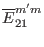
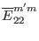
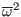
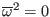
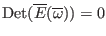
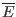
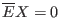

Next: Analytical approximations to continuous Up: Discrete form of elements Previous: Weight functions used in
In the GTAW code, the matrix elements  and  are multiplied by  (check whether this will make  a root of ?). After this, the matrix elements  can be written in the following form
The continua are determined by the condition that , which is the condition that the matrix equation  has nonzero solutions. Using Eq. (212), the matrix equation can be written